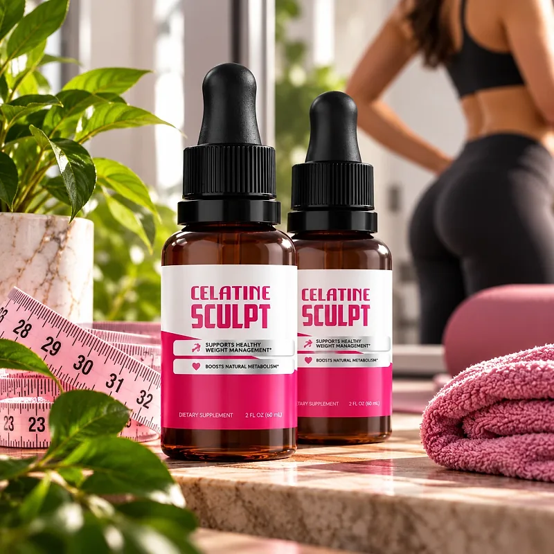
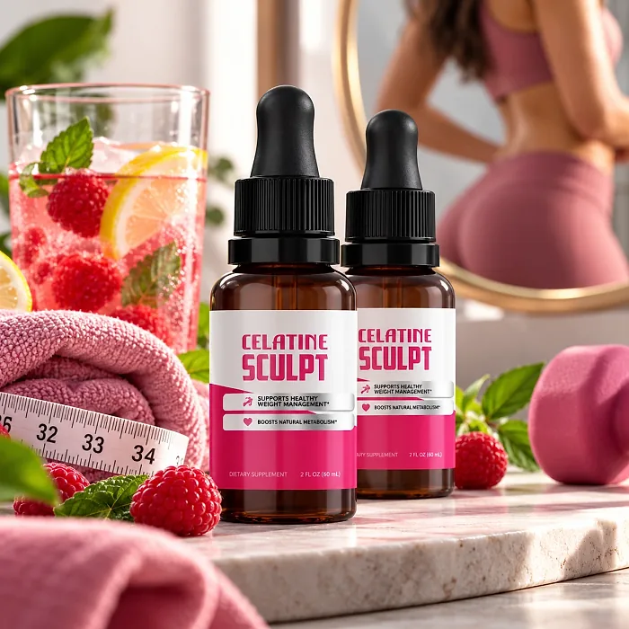
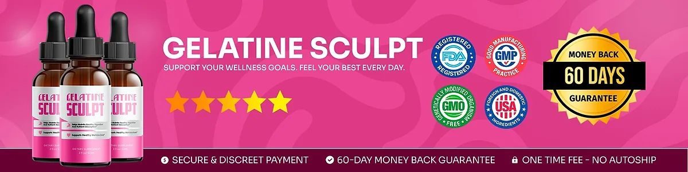

What Is Gelatine Sculpt And How Does It Work?
Gelatine Sculpt is a liquid dietary supplement in a dropper bottle, made to support healthy weight management, a balanced metabolism, and comfortable digestion for adults who feel that low energy, cravings, and a metabolism that seems to slow down with age keep getting in the way of their goals — and who want a simple routine instead of complicated plans.
The formula printed on the bottle combines Chromium with a 200 mg proprietary blend that includes L-Carnitine, Green Tea Leaf, Guarana Seed, African Mango Seed, Coleus Forskohlii, and Capsicum extracts, along with other botanicals and amino acids. The label sums up its purpose in two lines: it helps maintain healthy digestion and nutrient absorption and supports healthy metabolism.
The idea behind Gelatine Sculpt is that small daily support adds up. Ingredients such as Green Tea, Guarana, and L-Carnitine are associated with energy and the use of fats as fuel, while African Mango and Gymnema are commonly used to support satiety and fewer cravings between meals, particularly for adults who prefer one daily habit over several products.
It is not presented as an overnight transformation. Gelatine Sculpt works as a gradual, whole-formula approach, taken every morning alongside regular meals, so that energy, appetite, and digestion stay more even through the day.
With consistent daily use, customers on the official website describe more energy, a lighter feeling, and more confidence in their clothes, especially when the drops are combined with balanced eating, enough sleep, and some regular movement.
In practical terms, Gelatine Sculpt is a 1 fl oz (30 ml) dropper bottle with 30 servings of 1 ml — a one-month supply that takes less than a minute a day.
According to the product label, Gelatine Sculpt is made in the USA with globally sourced ingredients and manufactured in an FDA-registered facility, and it is designed for regular daily use by adults looking for a natural, non-prescription route to healthy weight management.
Gelatine Sculpt Ingredients
There is an important detail here. The sales page of Gelatine Sculpt says the formula is made of Green Tea Extract, Pure Gelatine, Turmeric, and Berberine, but the Supplement Facts panel on the official label image does not list gelatine, turmeric, or berberine. Because the label is what comes in the box, this review follows the label. Every 1 ml serving contains Chromium and a 200 mg proprietary blend; these are the components most closely tied to metabolism, energy, and appetite:
L-Carnitine Base: An amino acid derivative that helps carry fats into the cells, where they are turned into energy.
Green Tea (Camellia sinensis) Leaf Extract: Rich in catechins and natural caffeine, linked to thermogenesis and alertness.
Guarana (Paullinia cupana) Seed Extract: A Brazilian seed with natural caffeine, used for steady energy.
African Mango (Irvingia gabonensis) Seed Extract: A seed extract often used to support fullness and appetite control.
Coleus Forskohlii Root Extract: A traditional Ayurvedic botanical studied for its role in metabolism.
Capsicum Annuum Fruit Extract: A pepper extract added for its natural warming, thermogenic effect.
The same blend also lists Maca Root, Grape Seed, Eleutherococcus, Astragalus, Gymnema Leaf, Grapefruit, and Panax Ginseng extracts, Raspberry Ketones, L-Glutamine, L-Tyrosine, L-Arginine, Beta-Alanine, Monoammonium Glycyrrhizinate, GABA, L-Ornithine, and L-Tryptophan, without the amount of each one. Chromium (as Chromium Picolinate) appears at 0.7 mcg, 2% of the Daily Value. The other ingredients are glycerin, water, organic lemon extract, stevia extract, xylitol, sodium benzoate, potassium sorbate, citric acid, and natural flavors.
In short, Gelatine Sculpt is a multi-ingredient metabolism blend rather than a gelatin product, despite the name, and it is meant for daily, non-prescription use.
Gelatine Sculpt Side Effects
Gelatine Sculpt is generally considered well tolerated and is intended for adults who want a gentle, natural, and balanced approach to weight management — a few drops a day instead of harsh products that promise fast results and bring strong side effects.
The official website describes its ingredients as natural and rigorously tested, and the label states that Gelatine Sculpt is made in the USA with globally sourced ingredients in an FDA-registered facility, which supports consistency and quality from batch to batch.
There are no widespread reports of serious side effects. Still, the blend contains Guarana and Green Tea, two natural sources of caffeine, so people who are sensitive to caffeine may prefer to take it early in the day and limit coffee. Anyone who takes prescription medication should show the label to their doctor before starting. It is not intended to diagnose, treat, cure, or prevent any disease, and individual results may vary.
According to the label, pregnant or nursing mothers, children under the age of 18, and individuals with a known medical condition should consult a physician before using Gelatine Sculpt The label also asks you not to exceed the recommended dose and to keep the bottle out of the reach of children, which are sensible precautions for any liquid supplement used every day.
Gelatine Sculpt Dosage
The recommended Gelatine Sculpt dosage is one or two droppers full a day. It is a liquid, so there are no capsules to swallow and nothing to mix or prepare.
The directions printed on the label are simple: shake the bottle well before each use, take one or two droppers full daily, place the liquid in the mouth, and swallow. The official website adds that the best time is in the morning, before a meal, so the formula accompanies the most active part of the day.
Each bottle holds 1 fl oz (30 ml), or 30 servings of 1 ml, which works as a one-month supply. Because support for metabolism builds over time, consistency matters more than the size of the dose, and the official website suggests at least 30 days of use before judging the results.
The label also advises keeping the bottle away from heat, light, and humidity, storing it in a cool, dry place, and not using it if the safety seal is damaged or missing.
As with any dietary supplement, do not exceed the recommended dose. Gelatine Sculpt works best as part of a routine that includes water, balanced meals, sleep, and regular activity.
Gelatine Sculpt – Refund Policy
Gelatine Sculpt comes with a 60-day money-back guarantee counted from the date of purchase, which gives buyers two months to try the drops and decide whether they fit their routine.
According to the return policy linked on the official website, customers who are not satisfied for any reason can return the product and ask for a refund within 60 days of the order. The official website asks for at least 30 days of use before deciding. All bottles must be sent back, opened, empty, or sealed, and the return shipping is paid by the customer.
How to request a refund: Email customer support with "Refund Request" in the subject line, then mail all the bottles and the packing slip to the return address in the policy, with a note that includes your full name, email, and order number if you have it. After the package arrives, the refund is processed and a confirmation email is sent.
Customer Support Contact Information: contact@customercs.com or +1 (507) 448-8190, as printed on the product label.
Refund Processing Time: The policy says processing takes 5 to 10 days after the package is received; how long the amount takes to show on your statement depends on your bank or card company.
The steps are published openly, which makes the Gelatine Sculpt refund policy easy to follow if the product is not for you.
Gelatine Sculpt Customer Reviews
-
Beth Dammarell, 48 — CaliforniaVerified Purchase – 6 Bottles
“I was always tired, my joints ached, and I honestly thought my age would never let me lose weight again, especially after menopause. Then I started using Gelatine Sculpt and, for the first time in years, I felt my body actually respond. Now I can walk long distances without pain, and I’ve even gone back to wearing makeup and feeling feminine again when I look in the mirror.”
-
Taylor Brooks, 37 — MissouriVerified Purchase – 6 Bottles
“At 37, I used to hide in the corner of every family photo, wore loose tops, and was known as the ‘sloppy mom’ at my kids’ school. When I tried Gelatine Sculpt, I noticed my energy go up, and after a few days the weight finally started coming off. For the first time in my life, I actually found my size at a department store... and could run after my kids without getting tired.”
-
Melissa Grant, 45 — MassachusettsVerified Purchase – 6 Bottles
“I always wanted to lose a few extra pounds, but nothing ever worked. Diets, workouts... the result was always the same. With Gelatine Sculpt, for the first time I felt in control of my journey... Now I can finally wear that bikini on the beach without feeling insecure about that stubborn belly pouch!”
Gelatine Sculpt – Where To Buy
Gelatine Sculpt is sold through its official website, so if you decide to try it, it's important to be careful about where you purchase it. The official website is the only sales channel the manufacturer lists, and it does not point to marketplaces such as Amazon, eBay, or Walmart.
Listings on third-party platforms may look similar but cannot be verified as authentic, raising concerns about safety, quality, and ingredient freshness — a real concern for a liquid formula. Products purchased outside the official source may not be covered by the 60-day guarantee.
For this reason, most customers recommend purchasing Gelatine Sculpt only through the official website. Buying directly from the official source ensures you receive the authentic original product, made in the USA, with access to customer support and the full guarantee. According to the official website, every purchase is a one-time order, with no automatic renewals, hidden fees, or surprise charges.
To avoid counterfeit batches and ensure maximum quality, always verify that you are ordering from the official Gelatine Sculpt website before completing your purchase.
To ensure you’re getting the authentic product, most users choose to visit the official website.
Is Gelatine Sculpt A Scam?
Going by what the official website and the product label show, Gelatine Sculpt does not look like a scam. It is a real liquid supplement with a published Supplement Facts panel, a manufacturer address, a phone number, and a written refund policy.
The point that deserves attention is the gap between the sales page and the label. The sales page talks about gelatine, turmeric, and berberine, while the label lists Chromium and a blend with L-Carnitine, Green Tea Leaf, Guarana Seed, African Mango Seed, Coleus Forskohlii, and Capsicum extracts, among others. Buyers should rely on the label, which is the document that describes what is actually in the bottle.
According to the label, Gelatine Sculpt is made in the USA with globally sourced ingredients in an FDA-registered facility, with a focus on safety, purity, and consistency.
Customers quoted on the official website describe more energy, a lighter body, and more confidence, and the daily routine is easy to keep. Expectations should stay realistic, though: the blend is 200 mg per serving, results vary from person to person, and no supplement replaces a balanced diet, exercise, or medical care.
Gelatine Sculpt is backed by a 60-day money-back guarantee, and the official website says every order is a one-time payment, with no subscriptions, automatic renewals, or hidden fees. The return steps and the return address are published in the policy linked on the website.
For adults who want a simple daily liquid to support metabolism, energy, and healthy weight management, Gelatine Sculpt is worth considering — ideally bought from the official website.
For those who want to verify product details or check current availability, the official Gelatine Sculpt website remains the safest option.

Check Availability On Official Website
